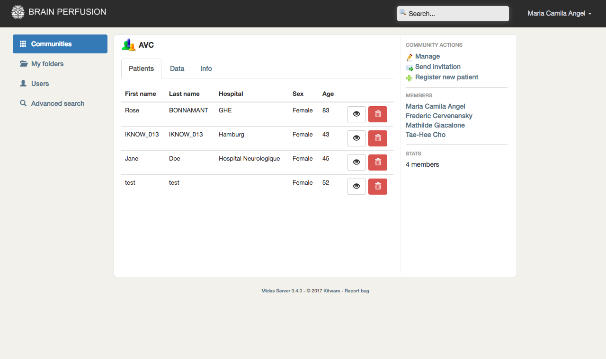

BrainPerfusion
Web based application that allows doctors and researchers to share medical data and images of pacients that have suffered a stroke. Users may upload, edit, visualize and download patient information (data and images) for further analysis. The app offers two visualization modules, one for stacks of 2D Dicom images and other for 3D Nifti volumes. It also has a search module based on Solr. The plataform development was based on an PHP-based open source platform called Midas. For the visualization modules Cornerstone and Brainbrowser libraries were integrated to the platform.